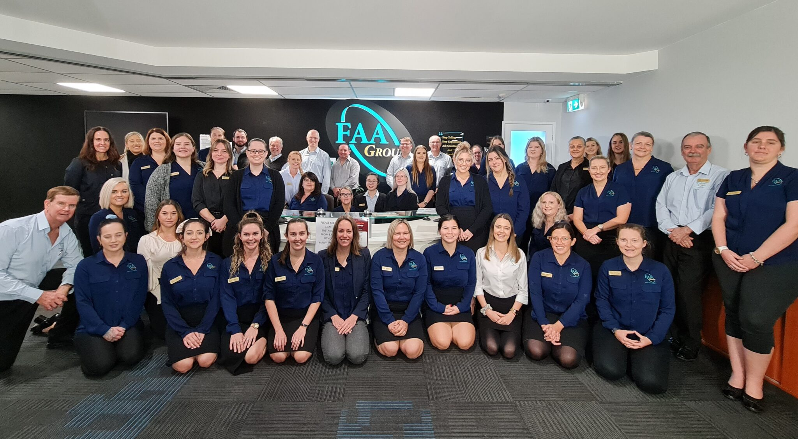
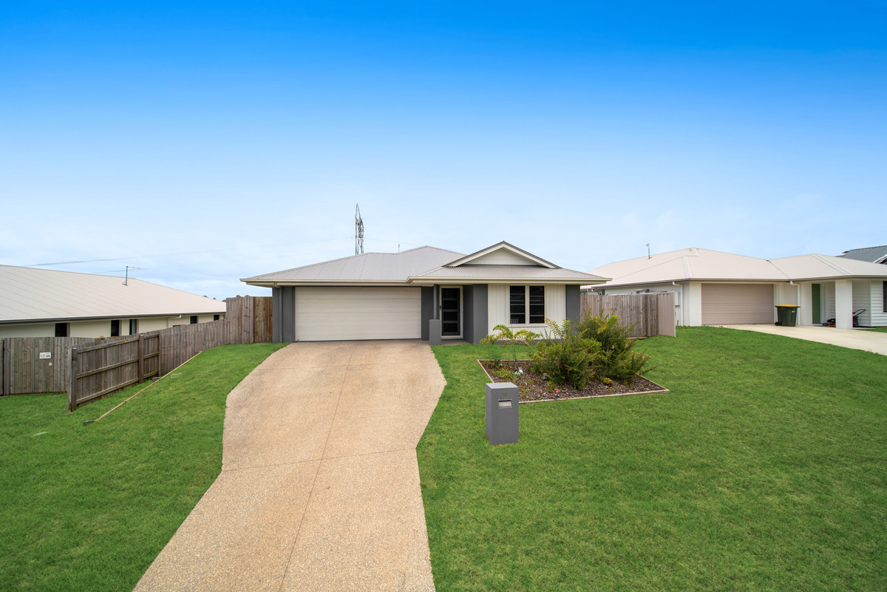
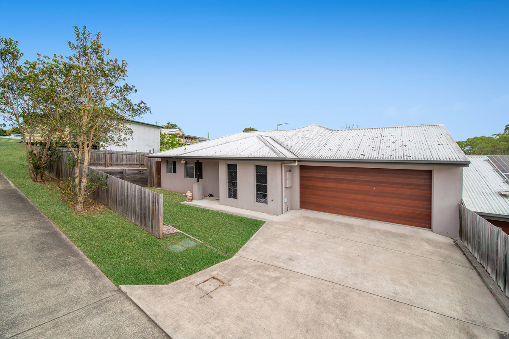
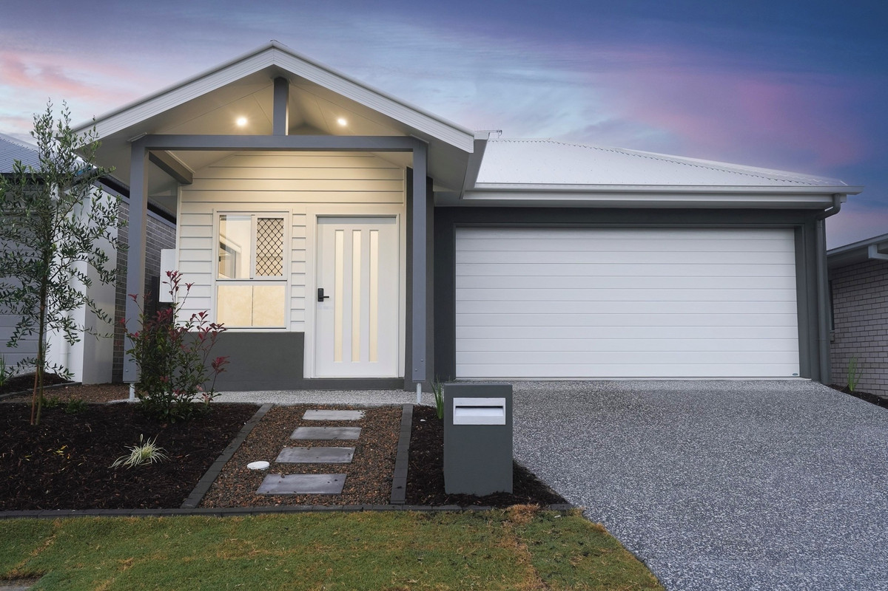

33+ years of investment experience
20,000+ clients served
Build your investment property plan with more clarity
Get help finding, funding and managing property in South East Queensland with support tailored to your goals.
Whether you're just getting started or ready to grow your portfolio, you can get help with:
- investment property strategy
- finance and borrowing guidance
- property sourcing
- ongoing property management
Helping everyday Australians invest with more confidence
What do you need help with?
Choose an option below to get started.
Experience
Backed by decades of experience helping Australians invest in property

Calculator
Plan your next investment property with real numbers
Use the calculator to:
- estimate your borrowing power
- understand your weekly cashflow position
- explore long-term growth potential
South East Queensland
Why investors are turning to South East Queensland
Strong population growth, infrastructure investment and rental demand are helping drive long-term property opportunities across the region.
Strong Capital Growth
South East Queensland continues to attract buyers looking for affordability, lifestyle and long-term growth potential.
- More affordable than Sydney and Melbourne
- Strong interstate migration
- Diverse local economy
Strong Rental Demand
Strong rental yields and ongoing population growth are supporting steady demand for quality rental properties across the region.
- 5.2% average rental yield
- 2.1% annual population growth
- Growing demand from professionals and families
$17B+ in Infrastructure Investment
Major projects across the region are improving connectivity, supporting jobs and helping drive future growth.
- Cross River Rail project
- M1 Motorway upgrades
- Brisbane Airport expansion
- Brisbane 2032 Olympic Games
Our Process
A clearer path to your next investment property
From your first conversation through to settlement and ongoing management, you’ll have a clear process and support at every stage.
Assessment
We take the time to understand your goals, budget and timeline.
Strategy
You’ll receive an investment approach tailored to your situation and long-term goals.
Selection
We help identify properties that align with your strategy and criteria.
Finance
We help you explore finance options to support your investment plans.
Settlement
We guide you through the documentation, contracts and settlement process.
Management
You can access ongoing property management support after purchase.
Outcomes
Real client outcomes
Every investor’s situation is different, but these examples show how the right strategy and support can shape long-term outcomes.
4.9/5 on Google from 67 reviews
Sarah
“FAA provided clear projections and helped secure quality tenants quickly. The interstate process felt straightforward, and I’m now looking at my second investment.”
Ryan
“My first investment felt much easier with the right support. From finance through to tenants, the process was smooth and the property has performed strongly so far.”
Garry & Cate
“Building a portfolio felt much more manageable with support across SMSF, lending and property strategy.”
Support
Support across every stage of your investment journey
From planning and finance through to property management, you can access support across each stage of the investment journey.
Finance & SMSF
Get help exploring lending options, borrowing capacity and SMSF structures that may support your investment goals.
- Pre-approval guidance
- Access to a competitive lender panel
- SMSF support
- Structuring considerations
Strategic Property Sourcing
Identify opportunities based on suburb research, growth potential, rental appeal and your investment criteria.
- Market research
- Off-market opportunities
- Due diligence support
- Negotiation assistance
Build Management
Stay informed throughout the build process with support focused on progress, quality and key milestones.
- Vetted builders
- Progress updates
- Quality inspections
- Defects management
Property Management
Access ongoing support with tenant placement, maintenance coordination and rental oversight after purchase.
- Tenant screening
- Rent reviews
- Proactive maintenance
- Financial reporting
Questions
Common investment property questions
Many investors start with the same concerns. Here’s how you can get clearer guidance around each one.
Worried about overpaying in a hot market?
Data-led research, local insights and careful due diligence can help you make more informed buying decisions.
Concerned about cash flow or lower-than-expected returns?
Clear projections and property selection based on yield, demand and long-term potential can help you assess what may be suitable.
Not sure which Sunshine Coast suburbs may offer stronger growth potential?
Suburb research, market trends and local knowledge can help narrow down areas that align with your strategy.
Concerned about managing a property from a distance?
Ongoing property management support can help with tenant placement, maintenance coordination and day-to-day oversight.
Feeling overwhelmed by SMSF rules and finance complexity?
Specialist guidance can help you better understand lending pathways, structures and compliance requirements.
Worried about missing good opportunities off market?
Access to a broader range of property opportunities may help you explore options before they become widely advertised.
Next Step
See what your next step could look like
If you're thinking about investing, a strategy call can help you understand what may be possible based on your goals, budget and timeline.
Why FAA Property
Why FAA Property ?
The Sunshine Coast is experiencing unprecedented growth, with Maroochydore at the epicenter of infrastructure development, lifestyle appeal, and strong rental demand. Investors are capitalizing on stable yields and capital growth potential.
- Strong capital growth in key suburbs
- High rental demand from lifestyle seekers
- Infrastructure investment driving long-term value

Properties
See what you could invest in
Each opportunity is selected based on rental demand, growth potential and long-term suitability.
Not sure which option suits you? Talk through your investment strategy with our team.

18 Imperial Rise, Jones Hill QLD 4570
3.98%Rental Yield
12.1%Growth p.a.
$850,000From
$650/weekEst. Rent
- Low-maintenance home in a quiet Jones Hill location, suited to long-term tenant appeal
- Open-plan layout with easy-care finishes designed for practical, low-fuss living
- Well-presented bathroom and modern finishes that support broad tenant appeal

Rifle Range Road Opportunity
4.09%Rental Yield
18.4%Growth p.a.
$610,000From
$480/weekEst. Rent
- Ducted air conditioning throughout, adding comfort and year-round rental appeal
- Three-bedroom layout with built-in storage, well suited to everyday tenant needs
- Elevated position in a quiet pocket, supporting liveability and long-term appeal

Yarrabilba House & Land Opportunity
4.16%Rental Yield
15.2%Growth p.a.
$770,000From
$616/weekEst. Rent
- Well-sized main bedroom with walk-in wardrobe, adding comfort and practicality for occupants
- Fully fenced backyard offering functional outdoor space for families and tenants
- Air-conditioned living and main bedroom, with ceiling fans throughout for added comfort
Want to explore more options suited to your budget and goals?
Book Your Strategy CallBenefits
What smart property investing may help you achieve
With the right strategy, property investing can help you work towards stronger long-term outcomes with more structure and less guesswork.
Pay down debt sooner
A well-structured investment plan may help you build wealth over time while working towards reducing non-deductible debt sooner.
Improve cash flow over time
The right property, rental strategy and financial structure may help improve your after-tax cash flow over the long term.
A clearer investment framework
A consistent approach to assessing property, cash flow and risk can help you make more informed decisions instead of chasing trends.
Long-term wealth principles
Long-term investors often focus on compounding, time in the market and sensible use of debt rather than short-term wins.
Focus on sustainable growth
Looking at location, supply and demand, rental trends and broader market fundamentals can help you focus on long-term growth potential.
Avoid common mistakes
Clear planning can help you avoid common pitfalls such as overextending on debt, buying the wrong property type or focusing too heavily on short-term benefits.
Why South East Queensland
Why investors are looking to South East Queensland
Maroochydore and the broader South East Queensland region continue to attract new residents through lifestyle appeal, employment opportunities and major infrastructure growth. For investors, this can create:
- consistent rental demand from families and professionals
- potential for long-term growth supported by population and infrastructure investment
- strong appeal for tenants seeking lifestyle, convenience and connectivity
- a broad mix of investment options, including house and land packages, townhouses and units
Choosing the right property in the right location can help support both cash flow and long-term wealth creation.

Calculator
See what an investment property could look like for you
Use the calculator to explore possible rental income, cash flow and long-term outcomes based on your budget, goals and selected inputs.
- Compare different purchase scenarios
- Understand how cash flow may vary
- Explore projected 5, 10 and 20-year outcomes
- Plan your next step with more clarity
What the calculator can show you
- Rental income estimatesWeekly, monthly and annual projections
- Yield overviewGross and net rental yield estimates
- Capital growth scenariosConservative, moderate and optimistic projections
- Cash flow estimateProjected income versus holding costs
- Equity timelineWhen your next investment may become more achievable
- Tax considerationsIndicative negative gearing and depreciation estimates
FAQ
Frequently asked questions
Start by understanding your financial position, including your income, savings, existing debts and borrowing capacity.
It can help to speak with a financial or property specialist who can guide you through your options and help you understand what may suit your situation.
Professional support can help you make more informed decisions, avoid common mistakes and save time during the process.
A specialist can help you narrow down your options, assess suitability and guide you towards a property that aligns with your goals.
Look for someone with relevant experience, clear communication, transparent fees and an approach that aligns with your goals.
Still have questions? Talk to our team about your situation.
Book Your Strategy CallContact
Talk to our team
If you’d like to talk through your options, get in touch by phone, email or visit us in Maroochydore.
Phone(07) 5327 3469
Emailproperty@faa.net.au
AddressSuite 3.27, Level 3, Tower 2, 56 Plaza Parade Maroochydore QLD 4558
Why speak with us directly?
- Get answers to your questions sooner
- Talk through your options with a local team
- Book a strategy call at a time that suits you
- Get clearer next steps based on your goals
Enquiry
Send us a message
Prefer to enquire online? Complete the form below and a member of our team will be in touch.
Disclaimer: Calculator results are estimates only, based on the inputs provided and general market assumptions. Actual results will vary and do not constitute financial advice. Property investment carries risk and you should seek independent financial, taxation and legal advice before making any decision.